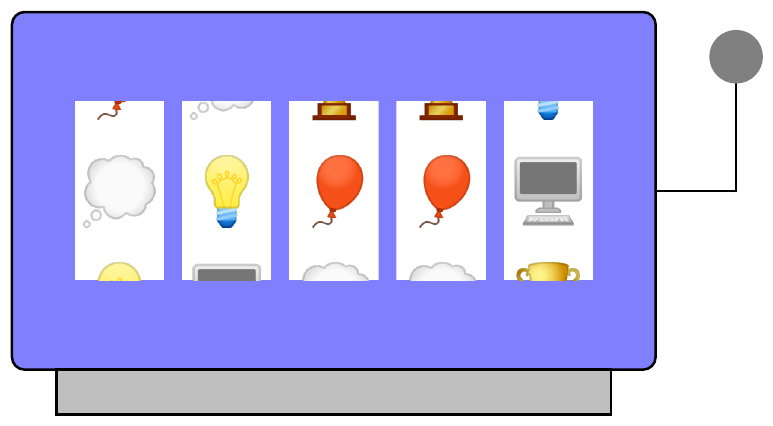

49th ICPC World Championship · Problem I
Imperial Chance & Play Casino offers games using a slot machine that has n wheels arranged next to each other. Each of the wheels has n distinct symbols on it, and these symbols appear in the same order on each wheel. Each wheel shows one of its symbols through a window on the front of the machine, which results in a sequence of n symbols being shown next to each other.

You are standing behind the machine and notice that a maintenance panel has been left open. When you stick your hand inside, you are able to secretly rotate any of the wheels by any number of steps, thus changing the symbol shown on that wheel. You want to win a jackpot, which will happen if all the wheels show the same symbol at the same time. Unfortunately, you cannot see the symbols from your position, so you asked your good friend to help you. The friend is standing in front of the machine and she tells you the number of distinct symbols in the sequence she can currently see. Can you win the jackpot by manipulating the wheels if your friend updates the information after every action you make?
The first line of input contains an integer n (3 ≤ n ≤ 50), giving the number of wheels and symbols in the machine.
Interaction then proceeds in rounds. In each round, one line of input becomes available, containing an integer k (1 ≤ k ≤ n), the number of distinct symbols in the current sequence. If k > 1, output two integers i and j (1 ≤ i ≤ n; −109 ≤ j ≤ 109), representing your action: rotating the ith wheel by j positions, where negative numbers indicate rotating in the opposite direction. Otherwise, if k = 1, indicating that all wheels show the same symbol, your program must exit without printing more output.
At most 10 000 actions are allowed – if your submission uses more rounds, it will not be accepted. It is guaranteed that the initial configuration of wheels does not already have all wheels showing the same symbol (k > 1 in the first round).
The judge program will not behave in an adversarial way, which means the initial configuration is fixed before the first action.
A testing tool is provided to help you develop and test your solution.
Read
5 4 3 3 2 1
Write
1 1 4 2 3 1 3 1 5 4
Read
3 3 2 2 1
Write
2 -1 3 -1 2 -1